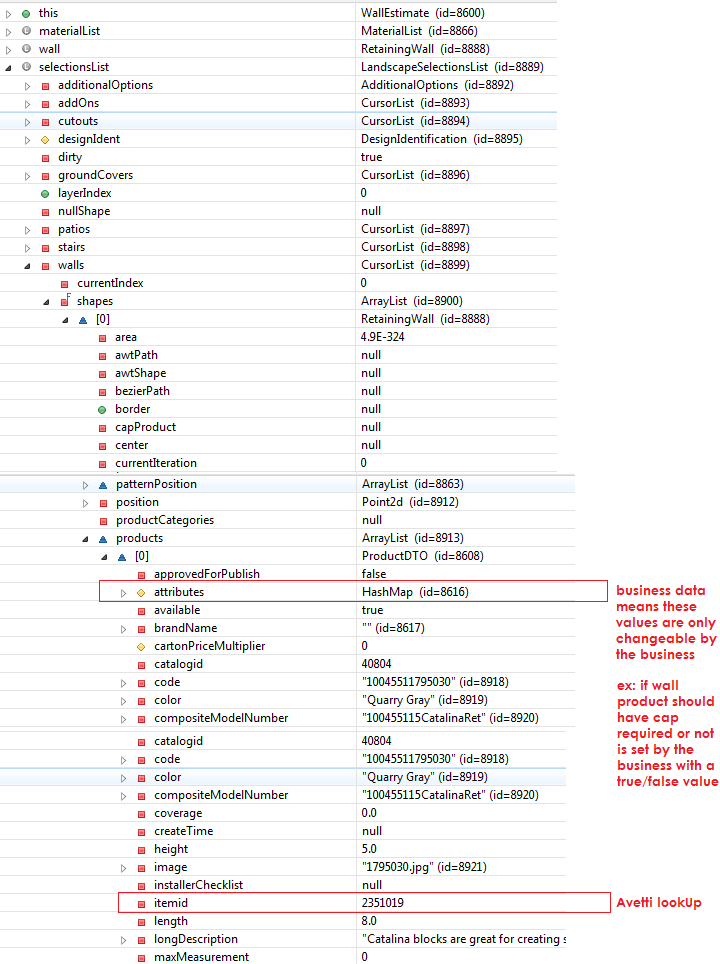
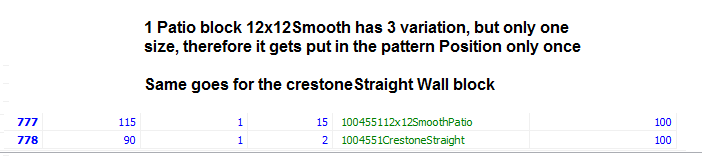
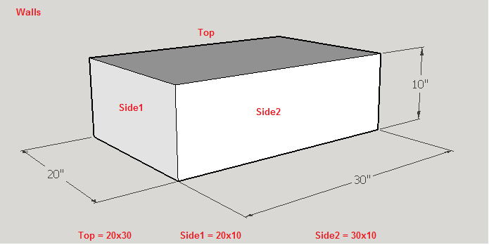
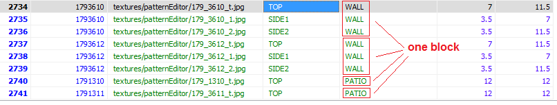

Landscaping
Landscaping is different from Landscaping Visualizer. It is not the web application and is based on the REAF framework running on Java. The application estimate materials for common types of Landscaping projects, such as patios, walkways, walls, and ground covers through building the parts individually.
Unique features the app supports
- Products are loaded dynamically, including pictures
- Has 3d view (REAF 3D)
- Allow user to add different projects leading to complex design.
Setup
- Eclipse
- Java
- Dependencies: REAF, 3D, Common, Landscaping
- Aveti - where product information is kept
Editing & Debugging
When editing with eclipse, You should be able to see your code or property changes when you hit next or back and come back to the same screen. If not, your eclipse is not set to build automatically. In eclipse go to Project > set to "Build Automatically" if not already set.
Startup Guide if Landscaping Has Issue Starting in Debug Mode
Database
As of September 2013, Landscaping has moved to the MCOM Database.
- Menards.com (MCOM)
- DIC Items (applies to only versions before Sept. 2013)
Maintenance
How to debug and verify selected products in Eclipse
How to work with patterns in the database
- If you are adding new blocks that have new patterns, you'll have to use the Pattern Editor to figure out the pattern(s)
- Once you get the pattern in pattern editor, save out the pattern to excel file
- Open up pattern excel file, copy the long text in the grid column
- You want to put this into the database when you insert the new pattern
- Open up Heidi, login into DesignIt tables > patterns > right click add new row
- patternId=latest_incremend, pattern_name=LandPat(nextHighestNum), display_name=nameOfPattern, display_order_nbr=1, grid_hgt=1, default_display_nbr=1, grid_wdt=1, max_y_nbr=null, max_x_nbr=null, image_name=patterns/imageName.png, grid_val=patternEditorGeneratedString, pattern_group_val=Landscape_Estimator, pattern_subgroup_val=readBelow
- Pattern_subgroup_val: PATIO will cover all sub patios, Wall will cover all freeStanding and retaining walls, FREESTANDING is use when a block is specifically just freestanding, EDGER, etc.
- You then want to match the patternPosition with the new pattern you creat, this can be tricky but it follows a pattern once you get the hang of it
Inserting pattern_position for Walls and Patio blocks with no patterns
Always click on show all, in case HeidiSQL or the sql tool isn't showing all rows, as you want to insert new rows from the very last row.

Inserting pattern_position for patios and walls with patterns
Blocks with different sizes will have one insert per size. One block with 3 color variations but all same size, will only have 1 insert as they are called by composite_model_number.
Inserting size dimension into three_d_attributes for walls and patios
 Quick snapshot of an overal round trip for adding a new block to landscaping
- Pattern (if it has a new pattern or determine reusable pattern)
- If new pattern is needed, use patternEditor to create to create that new pattern and put that new pattern intot he database
- Pattern_Position (map block to the existing or new pattern)
- three_d_attributes (map each product sku with their side textures)
- pattern images (if new pattern was created, request image ticket for that new pattern 150x150) put that into the media folder
- texture images (request texture images for the sides of the block for 3D use in the app) patio only need top texture, wall needs top, front(side1), side(side2)
- Make sure the new product is pushed to UA stage or so that it shows up in avetti
- Make sure the new product properties in avetti are set: Item size: length, width, height
- Make sure the new products are set up on preview for pricing information
- Make sure the new products property for guest orderability in the ua designit database is set to "V" and not "N"
- After the orderbilit is change, it may take 30 min to an hour for solar to pick up the new data, so you won't see the product show up in landscaing till solar does
Product Search Panel
How the screen looks
This is a panel where products are loaded and then becomes selectable. Such as patio blocks. The tricky thing is that the xml screen file is in the Common pacakge. The idea was that other apps will use these layouts. The hiearchy is productSearchPanel which then calls AppProductSearchScreenController .getProductPanel to decide which 1 of 3 panels to display.
- ProductSearchPanel.xml
- productSearchPanel.xml
- productPanelNoLeftBar.xml
- Patio blocks
- productPanelWithTextArea.xml
Controllers
Note: the odd setup is the screens.xml (in commmon) use the Landscape class AppProductSearchScreenController, which extends the Common class ProductSearchScreenController. If you want to see all the methods, look at the parent class.
Textures - Format and where they are saved
While most product images are called from MCOM server directly, we have to push the 3D texture into the designit database seperately and the pattern image.
- Patio, Walkway, Driveway
- Patio3D.java
- 3dTextures are saved in textures/patternEditor
- Patio has 1 texture only, the top view, ex: 179_1323_t.jpg > png can also be used
- Walls
- Wall3D.java
- 3dTextures are saved in textures/patternEditor
- Walls have 3 textures, the front (side1), side (side2), and top view, ex: 179_1323_1.jpg, 175_1323_2.jpg, 179_1323_t.jpg > png can also be used
- The back and bottom are never used
- Pattern Image
- created by the designers with the grey color and is 150x150, and gets saved under landscapeImags/patterns
- The pattern image associated with the ? at runtime is runtime generated using pattern editor however
Pattern Position Database
Walls and Patio uses pattern when getting their 3D displayed and blocks estimated. Although Walls, don't really use patterns, it still does call its pattern position from the patterns database.
Concept is that you create a new pattern for the block if the pattern doesn't exist. This is under the patterns table in the database. Every pattern has a pattern_id. Once the pattern is created or you find that a pre-existing pattern exist, you jump to the pattern_position table to map each product with their pattern from the patterns table. This means every color sku will have an input into the pattern position.
Once the block pattern_position is set, you are pretty much set and should not have to alter any codes.
SelectionsList
The SelectionsList class is static. LandscapeSelectionsList extends the SelectionsList. When you get an object such as Locking Sand, it is only the initial state to get locking sand ready and does not mean that locking sand will be esitmated. What has to happen next before Locking Sand can be fully estimated, the productDTO of locking sand has to be retrieved using a SearchBO call and put inside LockingSand's product container. The estimtator will run through the whole estimate classes and if there is a product, it will be estimated.
- LandscapeSelectionsList.getInstance()
- AdditionalOptions
- PaverBase
- LockingSand
- ProductDTO
- Patio
- AdditionalOptions